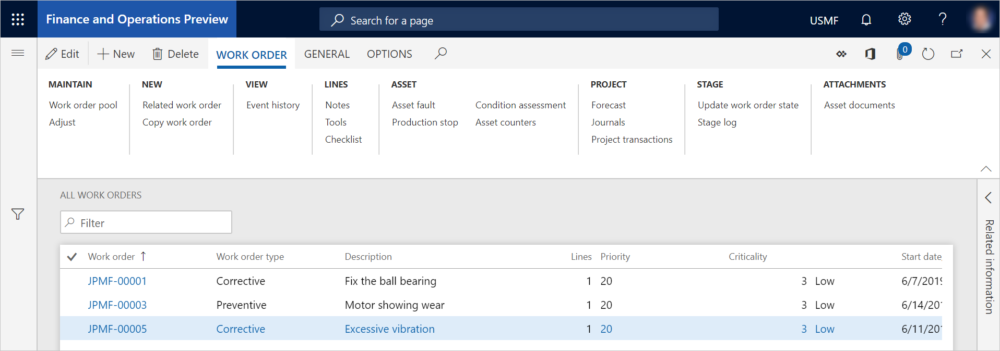

Arbeitsaufträge aus Wartungsanfragen erstellen
Important
Dynamics 365 for Finance and Operations hat sich zu speziell entwickelten Anwendungen entwickelt, mit denen Sie bestimmte Geschäftsfunktionen verwalten können. Weitere Informationen zu diesen Änderungen finden Sie im Dynamics 365-Lizenzierungshandbuch.
Nachdem Sie Wartungsanforderungen erstellt haben, können Sie sie ohne Weiteres in Arbeitsaufträge umwandeln. In diesem Thema wird die schnellste Methode beschrieben, um mit Wartungsanfragen zu arbeiten, mehrere Wartungsanfragen gleichzeitig zu aktualisieren und dann einen Arbeitsauftrag für mehrere Wartungsanfragen zugleich zu erstellen. Auf der Seite Aktive Wartungsanfragen oder Meine Wartungsanfragen für funktionale Standorte können Sie auch mit jeweils einer Wartungsanfrage arbeiten und eine Wartungsanfrage in einen Arbeitsauftrag umwandeln.
Note
Jede Wartungsanfrage kann sich nur auf einen Arbeitsauftrag beziehen. Allerdings können mehrere Wartungsanfragen in einen Arbeitsauftrag aufgenommen werden, selbst wenn die Wartungsanfragen über verschiedene Anlagen verfügen.
Wählen Sie Anlagenverwaltung > Allgemeines > Wartungsanfragen > Alle Wartungsanfragen.
Bevor Sie einen Arbeitsauftrag aus Wartungsanfragen erstellen können, müssen Sie mindestens einen Wartungsauftragstyp für die Wartungsanfragen sowie eine Wartungsauftragstypvariante und eine Facharbeit auswählen, wenn diese Informationen relevant sind. In der Rasteransicht können Sie Informationen für eine Wartungsanfrage leicht aktualisieren.
Wenn Sie bereit sind, einen Arbeitsauftrag zu erstellen, wählen Sie die Wartungsanfragen aus, die darin enthalten sein sollen.
- Wenn Sie mehrere Wartungsanfragen auswählen, um diese in einen Arbeitsauftrag umzuwandeln, müssen die Felder Anlage und Wartungsauftragstyp gefüllt werden, bevor Sie den Arbeitsauftrag erstellen können.
- Wenn Sie eine Wartungsanfrage auswählen, um diese in einen Arbeitsauftrag umzuwandeln, muss nur das Feld Anlage festgelegt werden, bevor Sie den Arbeitsauftrag erstellen. Wenn Sie jedoch den Arbeitsauftrag erstellen, können Sie einen Wartungsauftragstyp (sowie eine zugehörige Wartungsauftragstypvariante und eine Facharbeit, wenn diese Informationen relevant sind) im Dialogfeld Arbeitsauftrag erstellen auswählen.
Wählen Sie Arbeitsauftrag aus.
Legen Sie im Dialogfeld Arbeitsauftrag erstellen die Felder fest, und wählen Sie dann OK.
In einer Meldungsleiste werden Sie ggf. darüber informiert, dass ein neuer Arbeitsauftrag erstellt wurde.
Wenn Sie einen Arbeitsauftrag erstellen, der auf einer Wartungsanfrage basiert und die Anlage, die sich auf die Wartungsanfrage bezieht, in einer Garantievereinbarung enthalten ist, werden Sie außerdem in einer Meldungsleiste über die Garantievereinbarung informiert.
Wählen Sie Anlagenverwaltung > Allgemeines > Arbeitsaufträge > Alle Arbeitsaufträge aus, und öffnen Sie den neuen Arbeitsauftrag.
